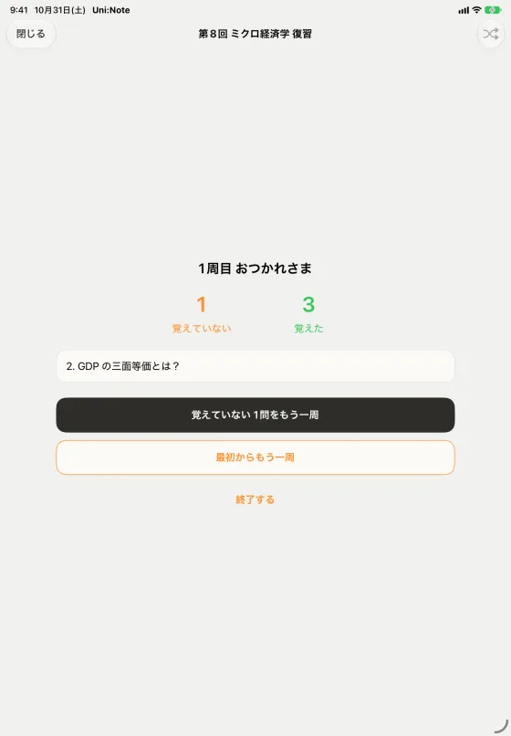
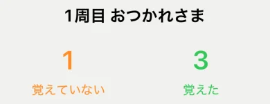

スワイプで振り分け
問題カードを右へスワイプすると「覚えた」、左へスワイプすると「覚えていない」。


1周終えたら、覚えていない問題だけ
1周の結果に、覚えた数と覚えていない数が出る。残った問題だけで、もう一周。


元のノートを見ながら解く（横向き）
iPadを横にすると、出典のノートページを横に表示できる。ノートを見ながら答えを考える。


問題カードを右へスワイプすると「覚えた」、左へスワイプすると「覚えていない」。
1周の結果に、覚えた数と覚えていない数が出る。残った問題だけで、もう一周。


iPadを横にすると、出典のノートページを横に表示できる。ノートを見ながら答えを考える。
答えをApple Pencilで書いてから、タップで正解を表示する。
途中でやめても、次は続きから。ランダムな順で出題もできる。
繰り返した周回数が積み上がる。
Uni:Noteは無料で始められます。